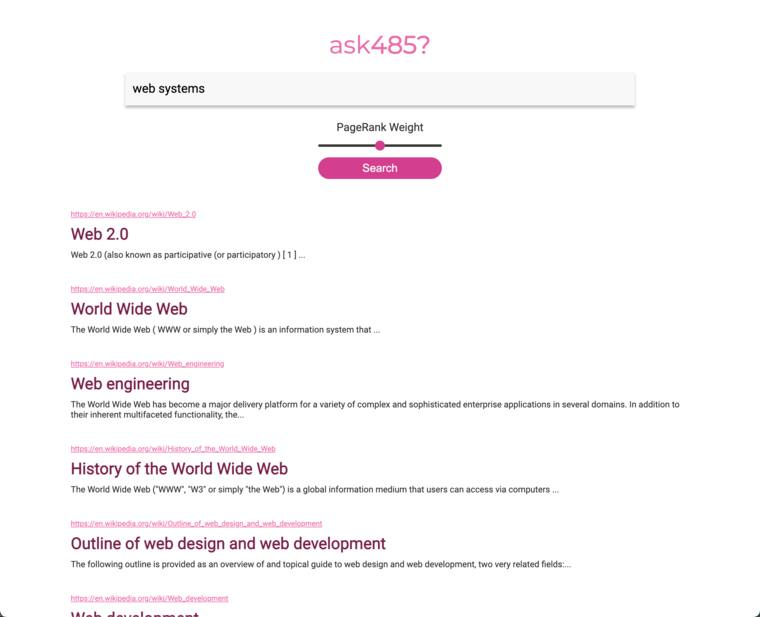
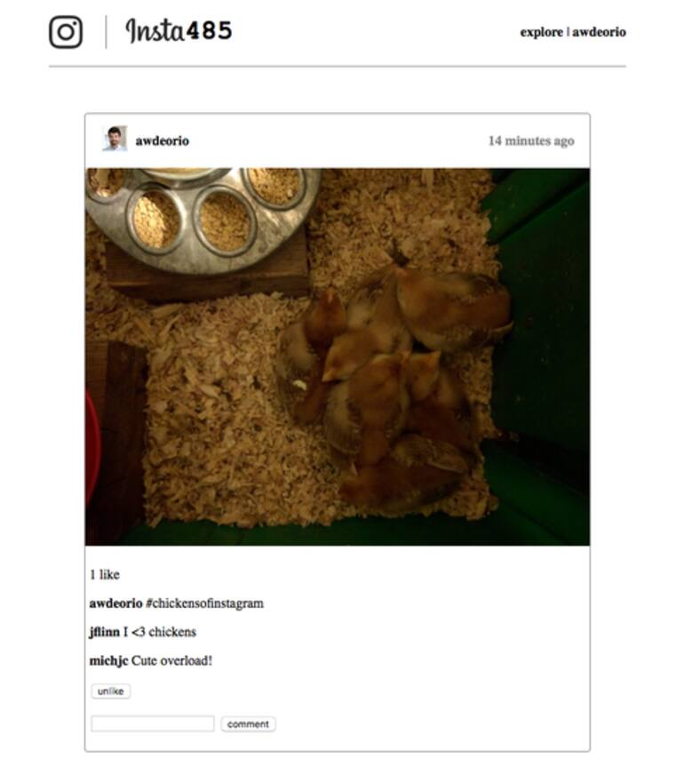
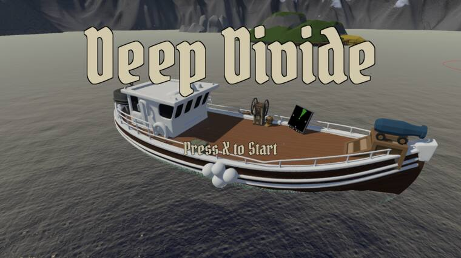

Work spanning game development and software engineering. Filter by type, by what it was built with, or by the problem it solves.
TYPE
{{ btn.label }}
STACK
{{ tag.label }}
FOCUS
{{ tag.label }}
{{ statusText }}
CLEAR FILTERS
NO PROJECTS MATCH THIS COMBINATION
CLEAR FILTERS
001
SWE
PERIOD
Jan 2026 — Present
STACK
typescript
react
node / express
postgresql
prisma
FOCUS
data pipelines
trader scoring
analytics dashboards
prediction-market-tracker
A prediction market intelligence platform that identifies high-conviction traders by tracking whale-sized trades across Polymarket and Kalshi, scoring wallets by demonstrated prediction skill. A data ingestion pipeline processes 1,000+ market events per hour into PostgreSQL via Prisma ORM, powering analytics dashboards and trading charts. A scoring engine evaluates 2,000+ wallets across resolved markets using win-rate and Brier score metrics, surfacing ranked forecasters via a React leaderboard backed by an Express REST API.
Source available on request — private repository, active development
002
SWE
PERIOD
Nov — Dec 2025
STACK
c++
python
FOCUS
concurrency
thread safety
custom protocols
file-network-server
A multi-client networked file system server in C++, built as a team project at the University of Michigan. The server supports remote file operations over a custom client–server protocol using a multi-threaded architecture with mutexes and RAII-style lock guards, enforcing atomic file and directory operations under concurrent access. The request/response handling layer includes full validation and error handling; the system was stress-tested to verify correctness and reliability under high contention.
Source available on request — private academic repository
003
SWE
PERIOD
Oct — Nov 2024
STACK
python
flask
sqlite
FOCUS
mapreduce
tf-idf
pagerank
information retrieval
distributed-search-engine
A distributed search engine indexing 10,000+ Wikipedia articles, built at the University of Michigan. A MapReduce pipeline builds a segmented inverted index with tf-idf weighting and document normalization. A Flask REST index server loads index segments, PageRank data, and stopwords into memory to serve ranked results using cosine similarity and weighted PageRank scoring. A search aggregator performs concurrent API requests across multiple index servers, merges ranked results, and serves a dynamic search interface backed by SQLite metadata storage.
Source available on request — private academic repository

Screenshot from the EECS 485 project specification by Andrew DeOrio and the EECS 485 staff, licensed under CC BY-NC 4.0.
004
SWE
PERIOD
Sep — Oct 2024
STACK
react
python
flask
aws ec2
FOCUS
rest api design
relational modeling
infinite scroll
social-media-platform
An Instagram-style social media platform with a React frontend and Flask REST API backend, built at the University of Michigan. Supports authenticated CRUD operations, pagination, and proper HTTP status handling for posts, comments, and likes. Features include infinite scroll, double-click-to-like interactions, and real-time feed updates via asynchronous Fetch API requests, backed by a normalized relational schema with optimized SQL queries for personalized feeds. Deployed to AWS EC2 with a configured Webpack build pipeline.
Source available on request — private academic repository

Screenshot from the EECS 485 project specification by Andrew DeOrio and the EECS 485 staff, licensed under CC BY-NC 4.0.
005
GAME
PERIOD
2024 — Present
STACK
unity
c#
FOCUS
co-op design
ui/ux
onboarding
game feel
deep-divide
A two-player local co-op underwater exploration game. One player captains the boat — navigating by radar and fending off pirate raids — while the other dives below to loot shipwrecks and reefs before their oxygen runs out. Players hit a daily quota at the merchant, buy upgrades, and push deeper across a five-day run, losing everything they carry if they die underwater. I contributed gameplay systems, UI/UX design, onboarding (tutorial, intro cinematic, contextual hints), diving feel (oxygen HUD, crosshair, underwater effects), and physics handling. Presented at a university game expo; in continued development toward a full public release.
VIEW ON GAMEJOLT

006
GAME
PERIOD
2024
STACK
unity
c#
FOCUS
enemy ai
combat systems
modular architecture
zelda-nes-remaster
A Unity-based recreation of The Legend of Zelda (NES), developed as a team project. I designed and integrated core gameplay systems — combat, enemy AI, UI, and room transitions — while implementing modular, reusable C# architecture to support the overall gameplay structure. Contributed to testing and debugging throughout development to ensure project stability.
The Legend of Zelda — NES (Remake)
itch.io embed · noahdelv
PLAY
007
GAME
PERIOD
2024
STACK
unity
c#
FOCUS
pubsub architecture
vision systems
player movement
observed
A 2D puzzle-platformer built in Unity centered around a vision-based freeze mechanic. Players use a directional flashlight to freeze enemies and platforms within their line of sight, transforming hazards into traversal tools and puzzle elements. I designed and implemented the core vision-cone detection and freeze system using a PubSub/EventBus architecture to keep systems modular and decoupled. Also developed player movement and aiming, reactive moving platforms, vision-blocking mechanics, a jump system, audio feedback integration, and camera refinements.